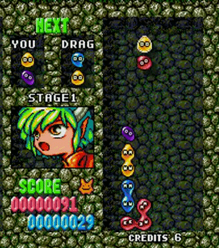

How to Play Puyo Puyo
The rules to Puyo Puyo are simple, but the skill ceiling is high! This page is dedicated to explaining the most fundamental rules of this puzzle game.
The Basics
Puyo Puyo can be single-player or multiplayer, but in most games you play against one other player. Puyo fall from the top of the board in groups of two, and you can move them left and right or rotate them to control where they fall. Once they land, the next group comes up. When four or more Puyo of the same color land together, they disappear, which causes the puyos on top of them to fall down.
If your Puyo stack up to the top of the screen in the tile that is labeled with an "x" (the third column from the left), you lose! In multiplayer, your goal is to make your opponent's board reach this state. Popping Puyo sends over "garbage" Puyo to the opponents board, which blocks their Puyo and brings them closer to the x-marked tile.

Chains
When you pop Puyo, the ones on top of them fall down. If the position that they fall in causes more Puyo to explode, a chain reaction (called a "chain") occurs. This is arguably the most important part of the game. Performing a long chain sends much more garbage to your opponent than a short one. A large part of Puyo Puyo gameplay involves creating large chains quickly before your opponent can block you. Skilled players are able to create chains longer than fifteen, although that is not very practical to do in a battle!

The Stairs Pattern
One of the more reliable ways to create a long chain is by placing your Puyo in a repeating pattern. The stairs pattern is a simple strategy that I found to be easy to learn. It involves stacking Puyo in a staircase-like pattern (hence the name). Below is an example of a five-chain that uses the stairs method. Check out the links on the Learn More page for a more in-depth explanation of Stairs and other patterns!